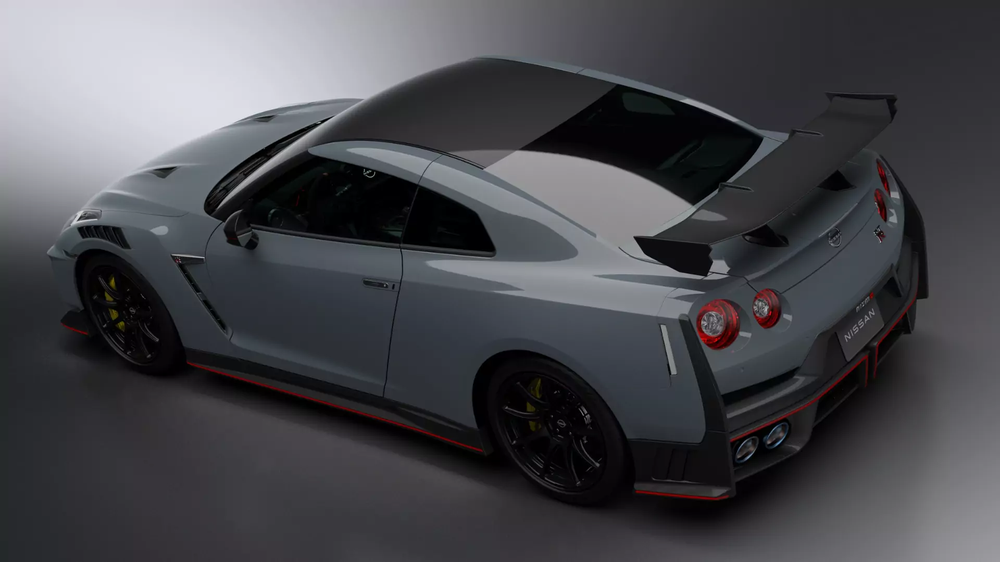

Sobre a Máquina
Apelidado de "Godzilla", o Nissan GT-R é a lenda japonesa que assombra os supercarros europeus. Seu principal diferencial é o sistema de tração integral extremamente tecnológico. Lenda das pistas e das ruas.

Ficha Técnica
- Motor: 3.8 V6 Biturbo
- Potência: 572 cv
- Torque: 64,5 kgfm
- Aceleração (0-100 km/h): 2,8 segundos
- Velocidade Máxima: 315 km/h
- Tração: Integral (AWD)
Vídeo de Demonstração
Veja o GTR em ação (YouTube):